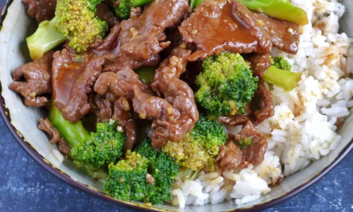

Beef and Broccoli Stir-Fry
Ingredients
- 1 lb beef sirloin, sliced thinly
- 2 cups broccoli florets
- 1 onion, sliced
- 2 cloves garlic, minced
- 4 Tbsp soy sauce
- 1 Tbsp peanut butter
- 1 Tbsp sesame oil
- 2 cups cooked rice
Directions
- In a bowl, mix soy sauce, peanut butter, and sesame oil. Set aside.
- Heat a large skillet or wok over medium-high heat. Add garlic and cook until fragrant.
- Add beef and cook until browned, about 3-4 minutes.
- Add broccoli and onion to the skillet. Stir-fry for 5-7 minutes until vegetables are
tender.
- Pour in the sauce mixture and stir to coat everything evenly. Let simmer for 1-2 minutes.
- Serve over cooked rice.